|
|
|
|
|
|

2006.4.
イカ帝国呼子。
ぐるぐる回るイカ干しマシーンに目を回し、イカしゅうまいに舌鼓をうち、市場でイカコロッケを食べ歩き。
そんな御気楽なウォーミングアップをこなしつつ向かったのは呼子の大仏さん。
唐津大橋の程近く、海に面した国民宿舎の庭先に立つ大仏さん。
正式な名前は判らないので「好きなことやろう」にならって呼子大仏と呼ばせてもらう。
若干散り始めた桜を従えて立つ大仏さん。その視線の先にはおだやかな海が見える。
時として荒れ狂い多くの人の命も奪ったであろう海を毎日眺める大仏なのである。
蓮華座の下の部分がカメの甲羅みたいで、何だか浦島太郎みたいっすね。
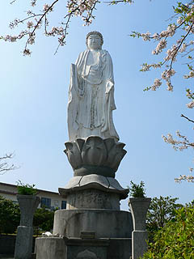 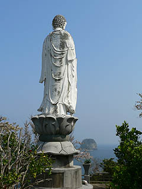
で、カメの甲羅の下にはこんな書が陰刻されていた。何て書いてあるかというと・・・達筆すぎて読めませんでした。
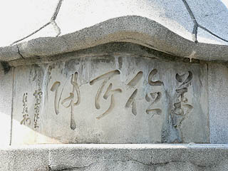
ここの大仏さんの特徴、それは何といっても大正時代のコンクリ大仏だということ。
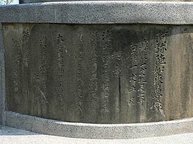
台座裏にはこのように刻まれている。
阿弥陀如来尊像
身長一丈九尺七寸
台高一丈5尺
趣意
海上ニ於ケル諸船舶ノ危難ヲ救済シ且溺死者ノ霊ヲ慰メンガ為建立ス
大正十一年四月吉日
建立者柴田常三郎 七十四才
後援者
呼子 名護屋
各宗協同會
恐らく日本で最初のコンクリ大仏だと思う。
大正11年とはどんな時代かというと、日本の建築界に鉄筋コンクリート造（RC造）が導入された初期だ。
日本初の高層住宅で有名な軍艦島の高層住宅が大正5年。これは鉄筋コンクリート造の高層住宅としては例外的に早い時期につくられたものである。
その後大正12年に起こった関東大震災を契機に大型建築の趨勢は一気に鉄筋コンクリート造に流れて行く。
今はなき表参道の同潤会アパートの完成は大正15年、そして本格的な鉄筋コンクリート造の時代の到来は昭和初期を待たねばならない。
コンクリ仏史観的には日本初の胎内巡り型の大仏である愛知県の聚楽園大仏の完成が昭和2年。
コンクリ大仏の特徴として挙げられる積極的な内部空間へのアプローチという点では聚楽園大仏の出現を待たねばならないが、その数年前にこうしてコンクリの仏像、しかも大仏と呼んでいいサイズの仏像が存在した事の意義は大きい。
それはまさに軍艦島の高層住宅が建築史から大きく逸脱した時期に建設されたのと同様、コンクリ仏史の中でも極めて特異な存在といわざるを得ない。
若干丸顔なのが気になるが、全体のプロポーション、衣の皺など、中々のものである。
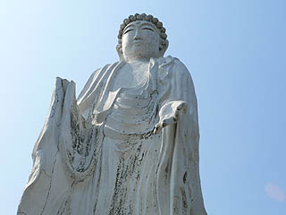 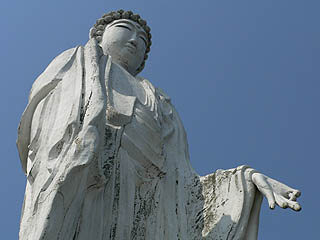
大正時代の作ということを差引いても高い技術力と精緻な原型の存在が見て取れる。
コンクリ大仏史に於ける最初の一歩を踏み出した記念碑的な作品である。
よっ！コンクリ大仏統括本部長！
しかし…
戦前コンクリ大仏大好きな私もその存在を把握していなかった程、この大仏の知名度は限り無くゼロに近い。
イカしゅうまいの1/100000の認知度（推定）を背景にその扱いはかなり寂しい。
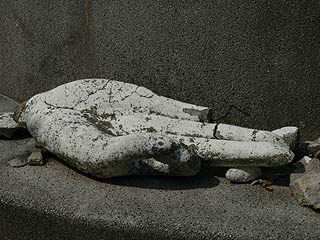 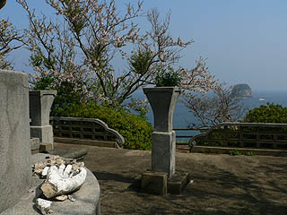
コンクリートの耐用年数が近づいてきているのだろう。右手が取れちゃってます…
これじゃあ大仏さんが船舶を救済したり、海で亡くなった方々を慰めたり出来ないじゃないですか。
印相は下品上生のようだが、こうしてOKサインの右手だけが単品で落ちているとかなり悲しい。
この大仏が建立された背景は分からないが、建立されたロケーション（勿論当時は国民宿舎などなかっただろうが）をみても特定のお寺が主導して建てられたモノではないのだろう。案外そんなところに右手崩落放置プレイの原因があったりするのだろうか。
早急な補修が望まれるが、どうなんでしょう。
おまけ
中山不動尊
唐津から呼子に行く途中で見つけた大不動明王像。
渡錫の鼻の項でも述べたが、福岡や佐賀では大きな不動様、しかもギンギンにペイントされている不動明王像を良く見かける。
密かなる巨大不動密集地帯なのだ。
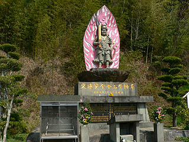 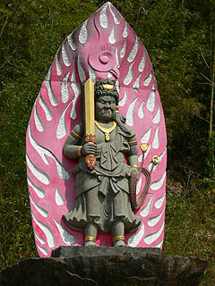
これもそのひとつ。平成6年に建立されたという中山不動尊、龍福寺という寺の境内にある。
お寺自体が交通量の多い幹線道路の合流地点を見下ろす位置にあり、そのインパクトたるや絶大。
信号無視でもしようものなら剣を振り回して追いかけて来そうな勢いの不動サマだ。
今日も道行く車の交通安全を祈願しております。
おまけその2
妙智院大観音
唐津から呼子に行く途中で見つけた大観音像。
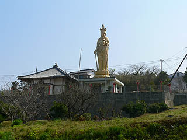 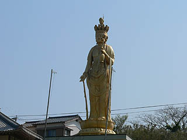
これまた高台に立っているのでスケール感倍増。金ぴかの十一面観音である。
恐らく最近出来たのだろう。ツルツルのピカピカだった。
この手のFRP製の大観音は良く見かけるが十一面観音は珍しいと思った。
それにしてもこれだけ日本全国津々浦々のFRP製大観音を見ているのに未だに見た瞬間「あ、仏具屋だ」と思っちゃうのは何でなのだろう？
…あっ、ウチの近所の仏壇屋の屋上に立っているからか。
2006.4.
珍寺大道場 HOME